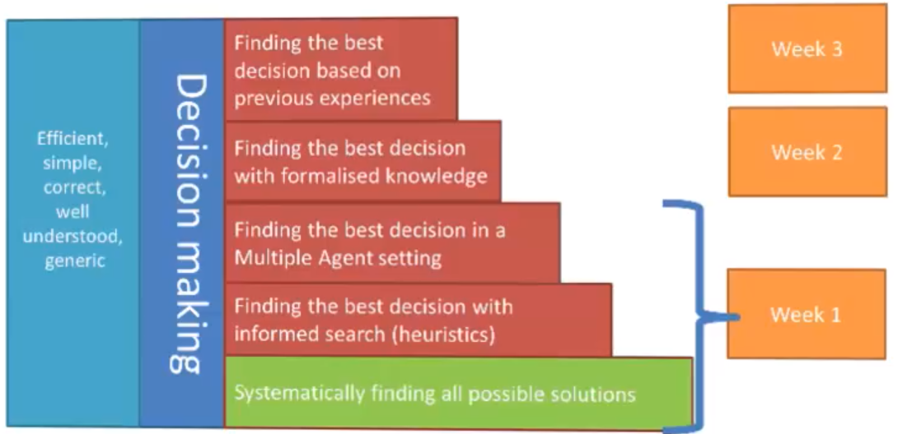

Homepage
Intelligent Systems
Alex Balgavy
core topics:
search & heuristics
knowledge
adaptivity

Table of contents:
Assessment information
State Space Representations Intro
State space search
Uninformed search strategies
Breadth-first (BF) search
Depth-first (DF) search
Depth-limited search
Iterative deepening search
Informed search (heuristics)
A Search
A* Search
Adversarial search
Minimax
Setup
Optimal strategies
Evaluation
Reducing problems of complexity with Minimax
Cutting off search:
Alpha-Beta pruning (efficient Minimax)
Search with no or partial information
Perfect information Monte Carlo sampling (rdeep)
Games with chance
Summary (Schnapsen)
Search direction
Rational agents
Agents
Rationality
Task environments
Agent types
Simple Reflex
Reflex & State
Goal-Based
Learning
Logical agents
What is logic
Syntax
Propositional logic (PL)
First order logic (FOL)
Basic elements:
Sentences
Quantification
Universal quantification
Existential quantification
Quantifier Duality
Decidability vs undecidability
Knowledge engineering in FOL
Choice of formalisms
Propositionalising FOL
Reduction to propositional inference
Universal instantiation (UI):
Existential instantiation (EI):
Applying in Schnapsen - Strategies (examples)
Play Jack
Play cheap
Play trump marriage
Semantics
Interpretations & Models
Entailment
Truth
Validity
Satisfiability
Calculus (algorithms for inference)
Properties of inference
Proof methods
Model checking & search
Truth Tables for inference
Effective proofs by model checking
Clause Normal Form (CNF)
DPLL algorithm
Heuristic search in DPLL
Satisfiability modulo theory
Rule-based reasoning
Inference rules
Searching for proofs
Forward and backward chaining
Resolution
Probability and Uncertainty
Vagueness: Fuzzy Set Theory
Fuzzy sets
Fuzzy relations
Evaluation
Uncertainties: Probability Theory
General
Axioms of probability
Joint probability distributions
Bayesian networks
Evaluation of probabilities
Machine Learning
Learning problems
Methodology
Data
Experimentation
Evaluation
Machine Learning Steps:
Choose the features
Inductive learning method
Classifying with naive Bayes
Clustering with K-nearest neighbor
Linear classifier
Support vector machine
Choose the model (model search)
Regression
Gradient descent
Neural Networks
Overview
Training neural networks
Autoencoders: a NN architecture
Trying it out
The promise of depth
Ethics of AI
Sci-fi ethics (problems down the road)
Today's problems
Philosophy of AI